Two kinds of work, and they feed each other. I build complete games — gameplay systems, AI opponents, art direction. And I build the pipelines that let a small team ship games at a rate a small team shouldn't be able to.
Sole author — every commit in these repositories is mine. Gameplay, art direction, asset production and release.
A complete pizza-shop sim benchmarked against Good Pizza, Great Pizza. Original systems throughout: order parsing, ingredient placement scoring, customer patience, a day/economy loop, and a grader that scores a pizza on coverage, evenness and topping ratio.
106 original art assets — characters, storefronts, interiors, UI and ingredients — generated through my own pipeline and art-directed by me. Playable start to finish.
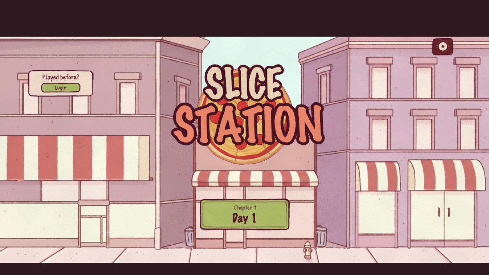
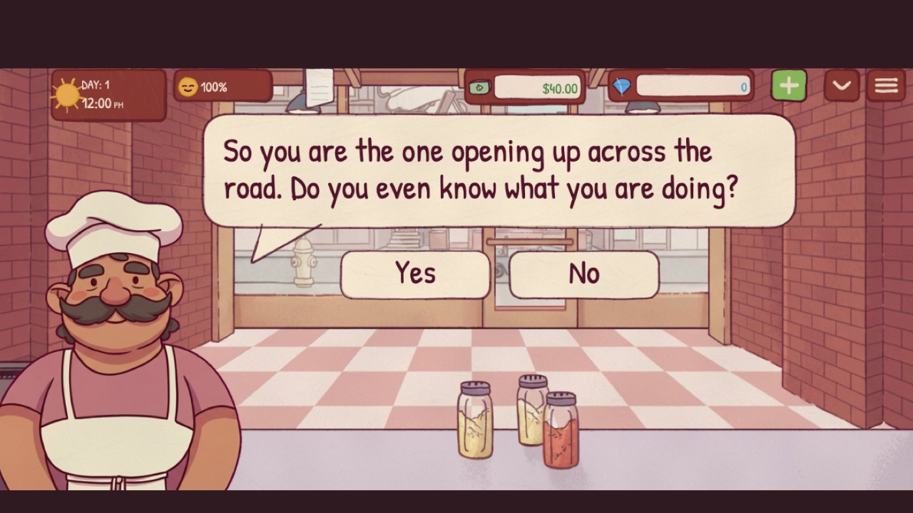
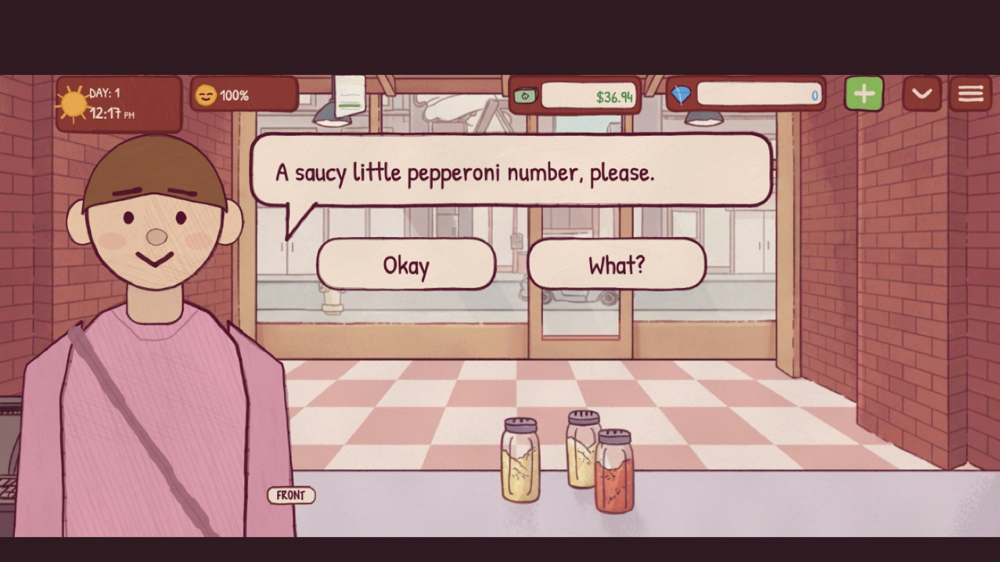
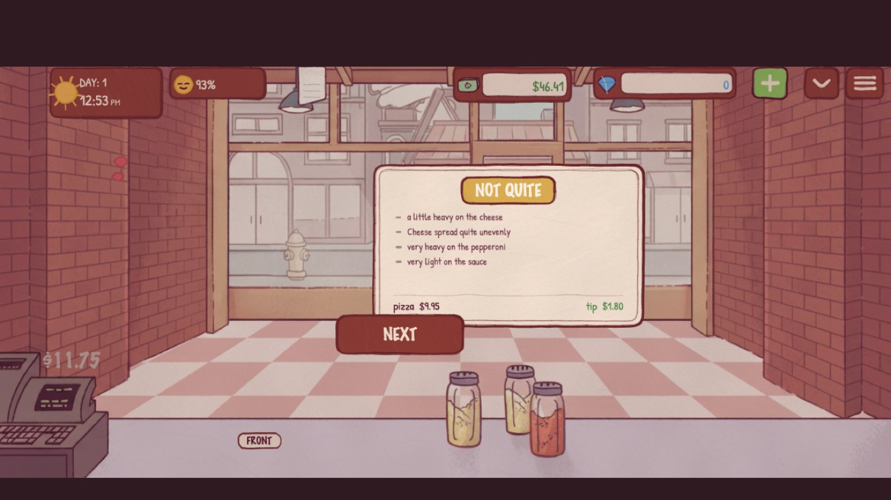
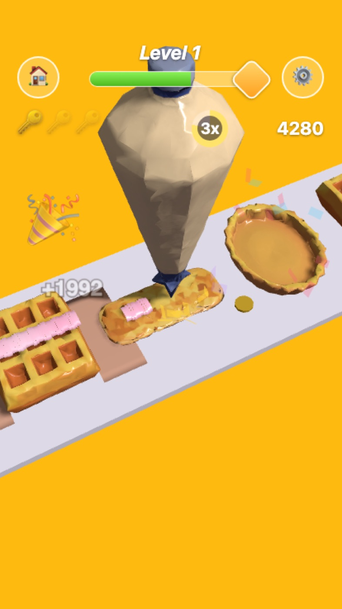
A one-touch decorating game: hold to pipe cream along a moving pastry, release to finish. Scoring is judged on coverage rather than a point ceiling no player reaches — stars are earned by what you actually covered, which took several passes to get honest.
Then ported the whole thing to Unity as a second implementation — a useful exercise in separating what was genuinely the game from what was only the web renderer.
The interesting constraint in this job isn't making one good thing. It's making twenty, to a consistent standard, on a schedule.
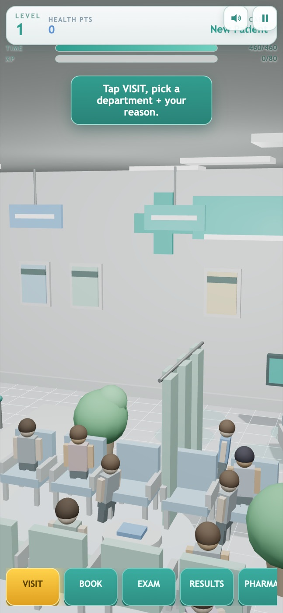
A full art and audio pass across fourteen live multiplayer titles, each submitted for release review. Every asset produced and integrated through the pipeline I built; gameplay and server logic untouched in all fourteen.
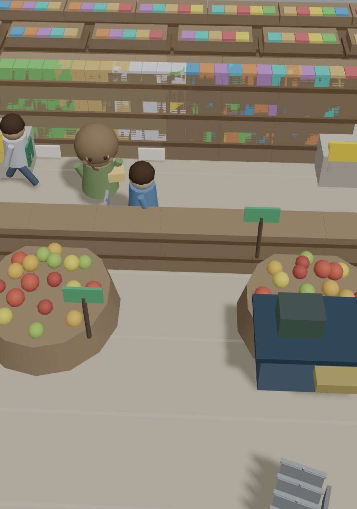
Where a title needed more than a re-art, it got a full 3D production pass. Care Shift — the clinic in that list of fourteen — took 33 models, 33 textures and 9 sound effects on its own. Every asset path keeps a procedural fallback, so a failed load degrades to the original art instead of a blank screen.
Backgammon, Reversi, Pool, Darts, Scrabble and Bridge — each with full rules, an AI opponent, music, sound and a complete art set. Detailed below.
| Title | The hard part | How I solved it |
|---|---|---|
| Pool | Physics decides whether the rules can be judged at all | Wrote the physics from scratch — elastic collision, friction decay, pocket tolerance. No third-party library. AI aims by ghost-ball. |
| Bridge | Bidding and play are different problems; four hands plus a bidding box must fit one phone screen | Separate bidding and play engines. Dedicated portrait and landscape layouts, both overflow-free. |
| Backgammon | Move generation, hitting, bearing off and the doubling cube are four coupled systems | Implemented the full doubling cube — offer, accept, drop — with the AI deciding on position. Most web versions omit it. |
| Reversi | Not the rules — an AI that doesn't feel stupid | Minimax with alpha-beta pruning, weighting corners, mobility and disc count. A self-playing preview teaches the game before you start. |
| Scrabble | Word validation plus a large placement search space | O(1) dictionary lookup and a time-bounded search that returns a move inside one second. Full blank-tile handling. |
| Darts | Throw feel is the entire experience | Anisotropic Gaussian scatter — wider horizontally than vertically, the way a real wrist wobbles. Verified the checkout table by hand and corrected an illegal route. |
Section 02 is only achievable because of this section. Two pipelines, both mine end to end, both public.
Nine stages: read a game's asset manifest, generate models, textures and sound, normalise and optimise them, wire them through declared seams, capture screenshots, then gate the result before anything is accepted. No per-game special cases — 48 of its tests exist purely to prove that.
Six stages converting browser games into native engine projects: structural analysis, scene planning, script generation, cross-file API reconciliation, static analysis, then an automated repair loop. Static checks catch what a parser can see; a review pass catches what needs meaning. Validated across four genres.
These interfaces were not drawn by hand. A written brief goes in; layout, asset generation and automated quality scoring produce this, with my rules deciding what "good" meant at each step.
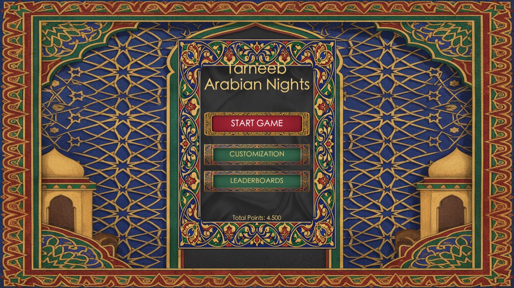
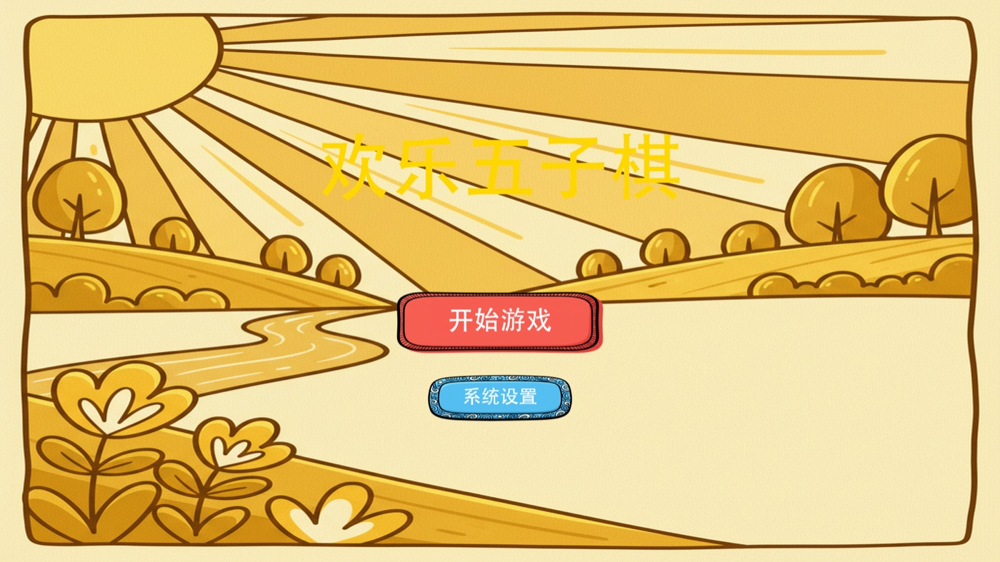
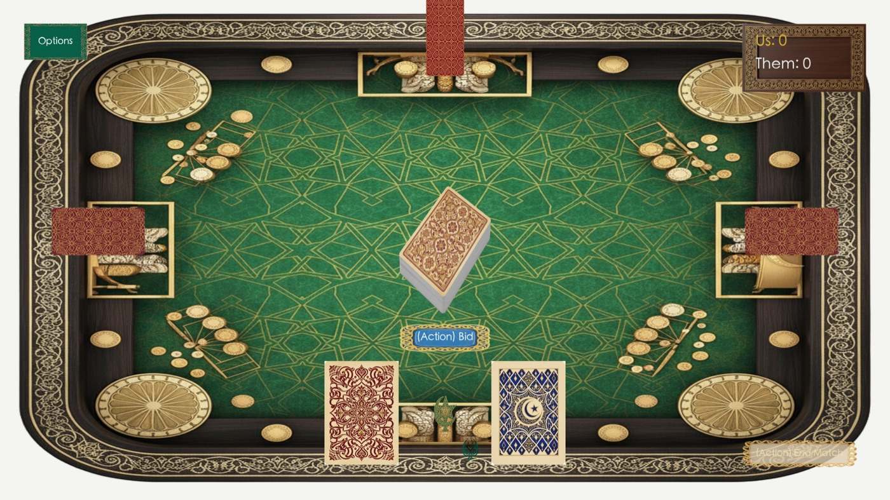
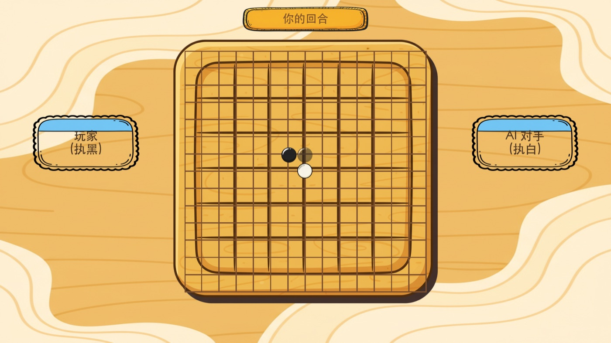
The company's main generation platform is a shared repository with several contributors. These are the subsystems I designed and built inside it — 218 commits between February and May 2026.
Art quality had no external yardstick, so it was luck. I built the system that pulls real competitor screenshots, scores each asset individually against them with a vision model, and writes the critique back into the next generation pass.
Layouts were generated once and frozen — whatever came out, shipped. I inlined an evaluate-and-improve loop into the main path so every layout critiques and repairs itself before anything downstream consumes it.
Competitor scoring existed only as an offline script. I turned it into production services: API routes, live progress streaming, task recovery across restarts, and concurrency guards. One of them proposes its own improvement experiments and runs them.
The conversational agent that helps users design a game forgot everything between turns. I built its memory: a schema for what a game concept is, staged extraction on separate cadences, and safe merges when a background thread and a save race.
Real-time games behaved unpredictably because collision and gravity were rewritten from scratch every generation. I replaced that with a fixed-timestep loop, an AABB and circle collision library, and continuous input-state tracking.
One prompt was asked to decide what a chess piece should look like and write the code to build it, and did neither well. I split it: a design stage emits a pure visual spec — materials, mesh composition, camera, lighting — and generation consumes it.
Both pipelines from section 03 are public. Most of my other work sits in private company repositories, so these are where the engineering is open to inspection.
Generating things is cheap now. Knowing which output is actually correct is the job.
I've shipped builds where every gate passed and the result was visibly broken: a character that walked but had no skeleton; toppings that scored correctly but never rendered. A screenshot missing its subject is pixel-identical to a screenshot of an empty scene. So I added gates for animation, character legibility and colour separation — and I still click through with a real mouse before signing off.
For brand safety on a food game, I built the colour ramp so it can only lighten toward raw — there is no burnt colour in the system to reach. A threshold can be edited by whoever comes next; a colour that doesn't exist cannot be. Design the failure out rather than guarding it.
A real share of my work goes into failure paths — service timeouts, unavailable model versions, truncated inputs. None of it shows in a demo; all of it shows when you run fourteen jobs unattended. The default for each was silent degradation: output quietly gets worse and nobody notices. Converting those into loud, marked failures is what makes automation trustworthy.
I've rolled back three of my own changes after testing contradicted me — including an auto-correction that turned out to be fixing a bug in my checker rather than in the asset, and would have silently rotated a correct model. Reverting costs far less than letting a confident mistake run across a whole batch.